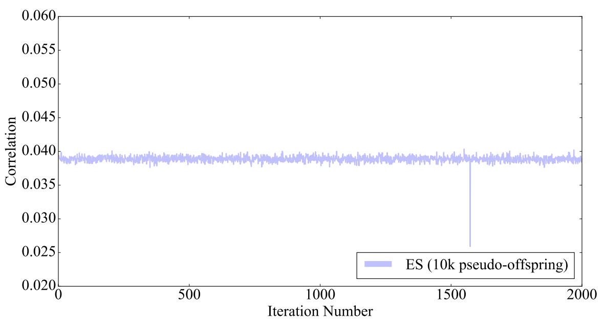
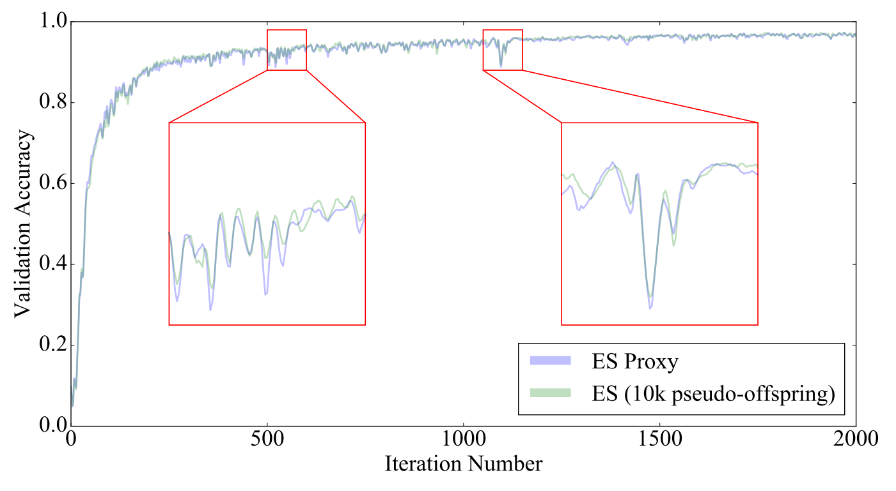

On the Relationship Between the OpenAI Evolution Strategy and Stochastic Gradient Descent
Zhang, Xingwen, Jeff Clune, and Kenneth O. Stanley. “On the Relationship Between the OpenAI Evolution Strategy and Stochastic Gradient Descent.” arXiv preprint arXiv:1712.06564 (2017).
Summary
ES as in Salimans 2017 estimates the gradient: \[g^{ES} = \nabla_\theta \mathbb{E}_{\epsilon \sim \mathcal{N}(0,I)} F(\theta + \sigma \epsilon).\] Note that this gradient is estimated by sampling \(N\) “pseudo-offsprings” according to the distribution \(\mathcal{N}(\theta,\sigma^2I)\). This paper seeks to determine the relationship between \(g^{ES}\) and the ‘true’ gradient \(g = \nabla_\theta F(\theta)\). Theoretically, as \(\sigma \to 0\) and \(N \to \infty\), then \(g^{ES} \to g\).
Empirical results on MNIST data:
- the average correlation between \(g^{ES}\) and \(g\) is 39.04%, where correlation is calculated at each time step \(t\) in the ES algorithm (?? is this a typo—the paper also seems to suggest 3.9% later on??)
- oddly, the correlation between \(g^{ES}\) and \(g\) is very stable; small variance. Note that this is run with a relatively small value of \(\sigma = 0.002\):

- running ES and SGD on the same architecture/hyperparameters led to 96.99% and 98.69% validation accuracy, respectively.
- \(g^{ES}\) may be approximated, at least at the \(\sigma = 0.002\) level by the estimator: \[g^{\mathrm{Proxy}} = g + m g^{\mathrm{Noise}},\] where \(g^{\mathrm{Noise}}\) is an independent noise vector and \(m\) is set so that the correlation between \(g^{\mathrm{Proxy}}\) and \(g\) is equal to the correlation between \(g^{ES}\) and \(g\):

Additional Comments
- This paper takes the perspective that the gradient computed for SGD is the “optimal gradient”, surprised that even a low correlation (3.9%) to this optimal gradient can lead to validation accuracy within 1.70%.
- It remarks that ES is not appropriate for supervised learning, where “the optimal gradient…is perfectly accessible” and the additional overhead in ES is “clearly unwarranted”. However, its advantage is its parallelizability.
Discussion
Two of the most interesting aspects to this paper are (1) the correlation between \(g^{ES}\) and \(g\) has very low variance; it looks like standard deviation of < 0.1%, and (2) the validation accuracy of ES and ES-proxy are almost identical. Why should this be the case?
Perhaps this suggests that there is a subcollection of more sensitive parameters where even letting \(\sigma = 0.002\) is too high variance. Would this correspond to different layers of the network (probably the earlier layers)?
Question 1: After training a neural network, compute the sensitivity of each layer of the network. Can we characterize the effects of the subsequent layer as ‘damping’ or ‘amplifying’? In the sense that if layer \(i\) is highly sensitive, then the subsequent layers must amplify the output of layer \(i\) (so layer \(i\) better be relatively precise). C.f. hyperbolic dynamical systems, expanding and contracting maps. Relation to partial derivatives?
Question 2: Perhaps ES-proxy makes a good proxy for ES only for certain values of \(\sigma\). At what point might the correspondence break down?